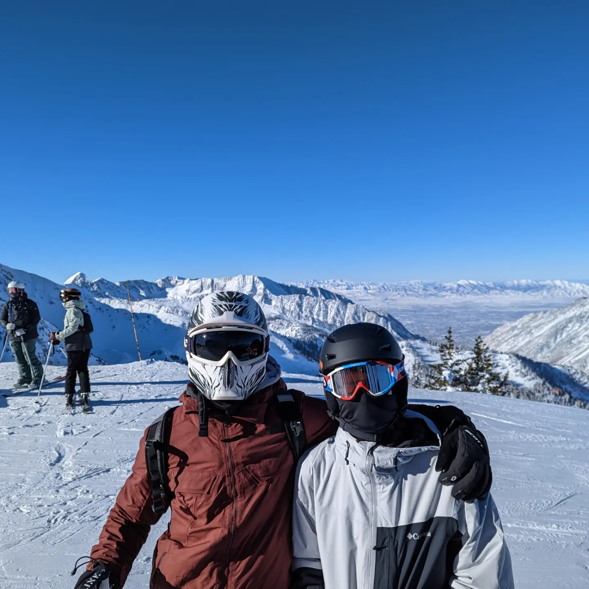
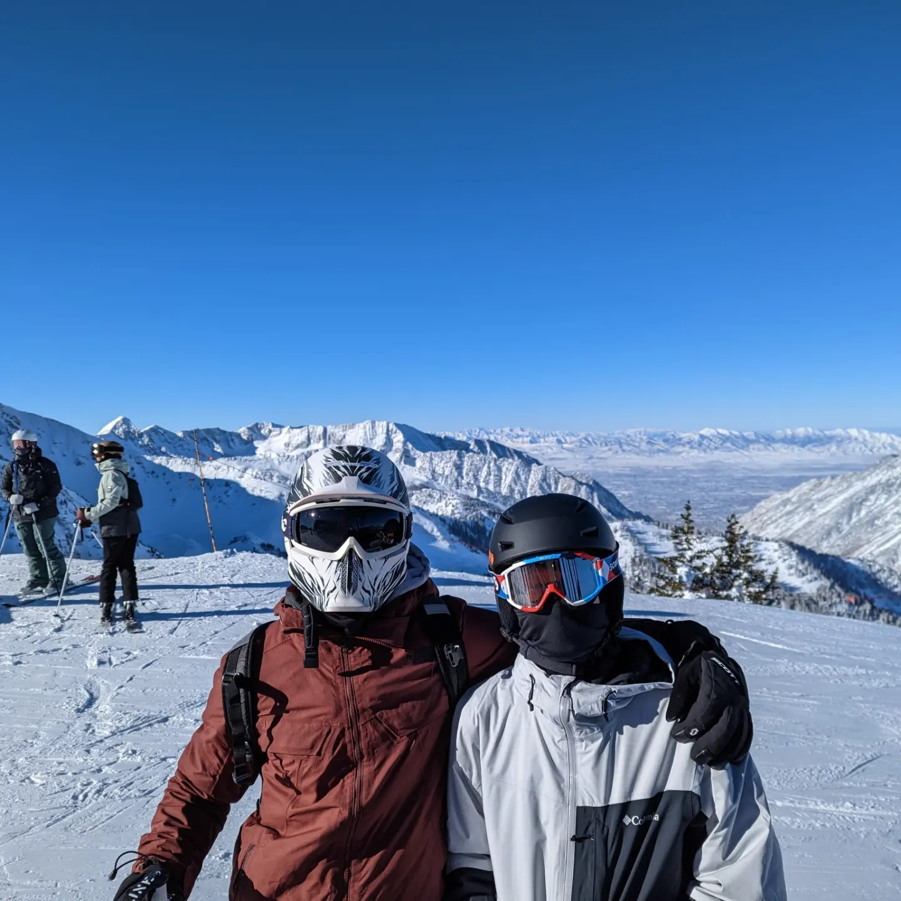

Braden Jones
10722 S Farmview ln · South Jordan, UT 84095 · (801) 382-9609 ·
bradenhjones@gmail.com
I am a pre-business student at Brigham Young University. I will be applying to the accounting program, were I will further my study of accounting.
 
